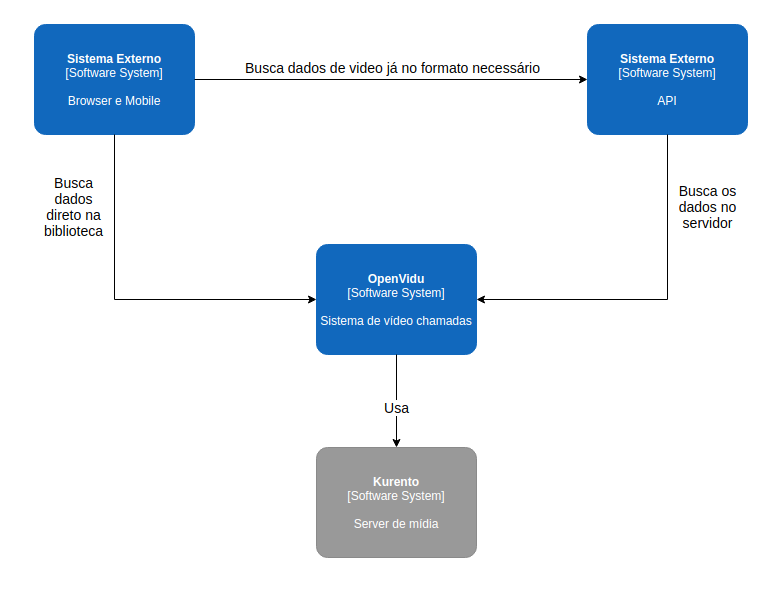
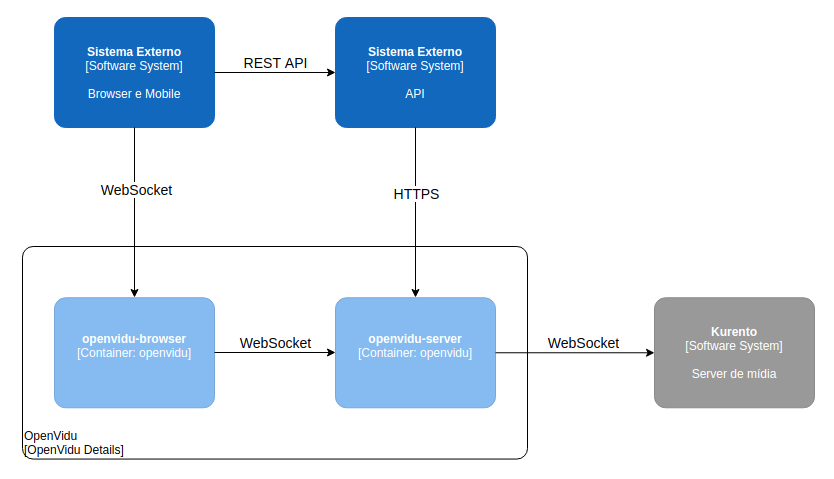
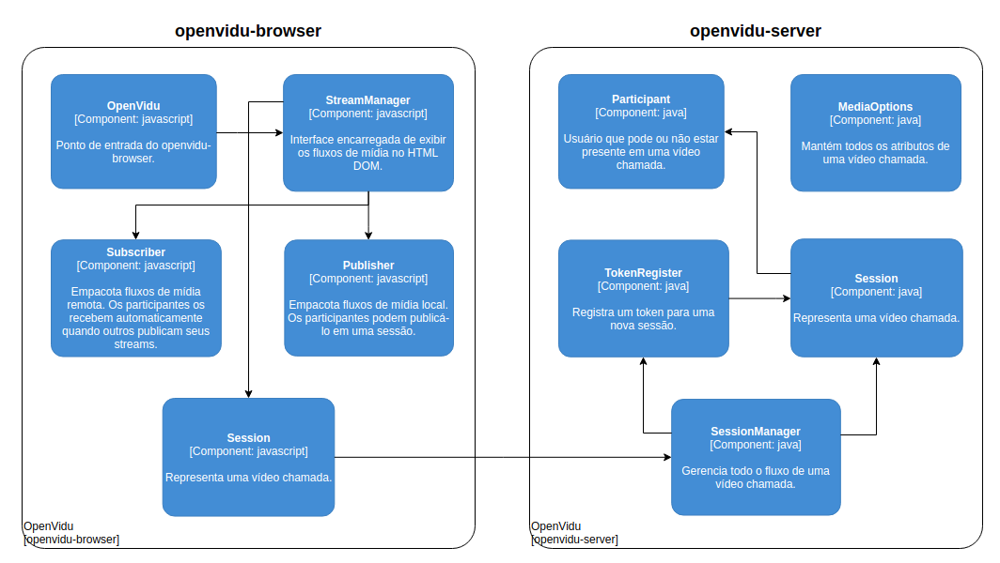

Descrição arquitetural do OpenVidu
Autores
Este documento foi produzido por Wellisson Gomes Pereira Bezerra Cacho.
- Matrícula: 118210873
- Contato: wellisson.cacho@ccc.ufcg.edu.br
- Projeto documentado: https://github.com/OpenVidu/openvidu
Descrição Arquitetural
Este documento descreve parte da arquitetura do projeto OpenVidu. Essa descrição foi baseada principalmente no modelo C4.
Descrição Geral sobre o OpenVidu
É uma plataforma para facilitar a adição de videochamadas em seu aplicativo web ou mobile. Ele fornece um conjunto completo de tecnologias muito fáceis de integrar em sua aplicação.
A plataforma do OpenVidu
Objetivo Geral
Permitir que os desenvolvedores e desenvolvedoras adicionem comunicações em tempo real a seus aplicativos de forma muito rápida e com baixo impacto em seu código.
Objetivos Específicos
Criar video chamadas totalmente customizadas sem se preocupar com as operações de baixo nível. O OpenVidu fornece uma API simples, eficaz e fácil de usar para você poder esquecer o WebRTC e as coisas complicadas relacionadas a mídia.
Contexto
O OpenVidu é utilizado por uma aplicação web (no cliente ou server side) que permite que os desenvolvedores adicionem comunicações em tempo real aos seus aplicativos de maneira rápida e fácil. O mesmo utiliza o Kurento para facilitar detalhes de baixo nível. Além disso, o OpenVidu pode ser utilizado tanto no client side (como o mobile, mas não expandiremos até esse ponto) como no server side.
Kurento é um servidor de mídia WebRTC (comunicação em tempo real da Web) e um conjunto de APIs que simplifica o desenvolvimento de aplicativos de vídeo avançados para plataformas web e smartphones. Os recursos do servidor de mídia Kurento incluem comunicações em grupo, transcodificação, gravação, mixagem, transmissão e roteamento de fluxos audiovisuais.

Containers
Abaixo, observamos o diagrama de container para o OpenVidu:

Como já havia sido dito, é possível utilizar o OpenVidu em diversos módulos de um único sistema. Daremos foco em dois containers: openvidu-browser e openvidu-server.
-
openvidu-browser: Nesse container, são executadas funções solicitadas pelo usuário. Isto é, renderiza determinados componentes que, juntos, constroem todo o arcabouço para chamadas de vídeo. Comunica-se com a API usando WebRTC.
-
openvidu-server: Container que engloba toda a parte do servidor da aplicação e gerencia o Kurento. É responsável por definir todas as entidades do domínio, criar uma sessão de vídeo, conectar usuários a uma determinada sessão, etc. Como já foi dito acima, é fornecido uma API WebRTC para o openvidu-client poder utilizar, mas também é fornecido uma API REST para que sistemas externos também possam fazer uso.
Componentes
Abaixo é possível observar o diagrama dos componentes mais importantes do sistema:

-
openvidu-browser tem diversos componentes:
- Session é o responsável por iniciar/terminar a sessão com o server. Além disso, contém todas as informações de uma chamada de vídeo.
- Subscriber permite inscrever-se ou cancelar a inscrição de um stream de áudio e vídeo.
- Publisher permite publicar ou despublicar o stream de audio e vídeo.
- StreamManager permite criar, atualizar e remover os vídeos de determinado stream. Além disso, o uso do StreamManager é particularmente útil quando você não precisa diferenciar entre streams do Publisher ou do Subscriber, ou apenas deseja gerenciar diretamente seus próprios elementos de vídeo (até mais de um elemento de vídeo por stream). Este cenário é bastante comum em frameworks de front-end declarativos MVC, como Angular, React ou Vue.js
- OpenVidu é o ponto de entrada da biblioteca. É nele onde são chamadas as funções do StreamManager. Logo, é onde fica responsável a lógica para gerenciar os publishers e subscribers.
-
openvidu-server
- SessionManager responsável por gerenciar todas as sessões. Isto é, juntar um usuário a uma sessão, publicar/despublicar um vídeo, enviar uma mensagem (chat), reconectar, etc.
- Session contém todas as informações de uma chamada de vídeo, ou seja, os publishers, os participantes, o estado de que é uma chamada privada ou não, etc.
- TokenRegister responsável por registrar um token para cada sessão ativa.
- MediaOptions contém todos os atributos de uma chamada, isto é, se há áudio, video, o tipo do vídeo e as dimensões do vídeo.
- Participant um usuário que está participando de uma chamada. Note que o estado pode ser pending ou active. Quando não é chamado o Session.publish no cliente side, o status é pendente. Do contrário, o status fica ativo e uma conexão WebSocket é estabelecida. Além disso, há todas as informações, como o timestamp de quando a conexão foi estabelecida, o tipo da plataforma que ele está, o token, o status, etc.
Visão de Informação
Aqui estão todos os possíveis estados de mídia dentro do OpenVidu.
- iniciando: a sessão está sendo iniciada.
- falhou: a tentativa de iniciar uma sessão falhou.
- rodando: a sessão está ativa e rodando. Novos participantes podem entrar enquanto esse estado estiver ativo. Pode ser alcançado pelos estados iniciando e esperando-terminar.
- esperando-terminar: é possível uma sessão ficar em modo de espera para terminar quando ela é fechada. Uma vez que isso acontece, irá automaticamente entrar no estado terminando.
- terminando: quando uma sessão está sendo fechada. Esse estado pode ser alcançado pelos estados rodando e esperando-terminar.
- terminou: quando uma sessão é fechada. Esse estado pode ser alcançado pelo estado terminando.